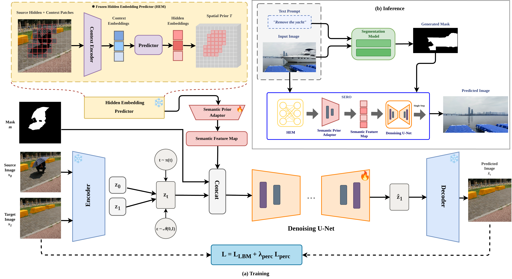
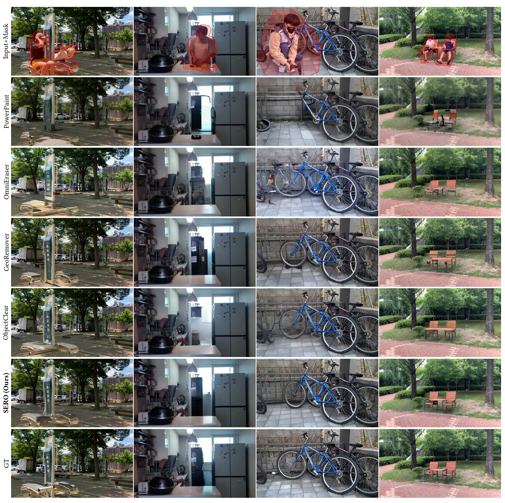
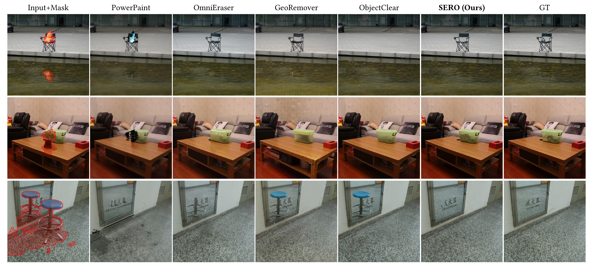
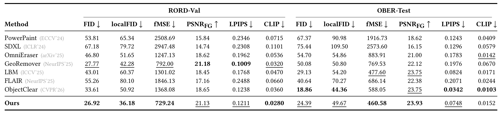
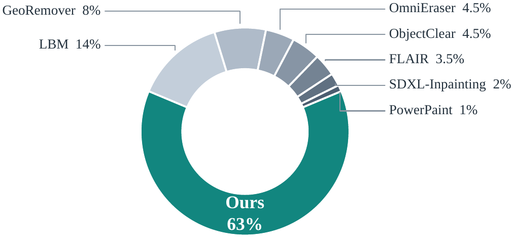
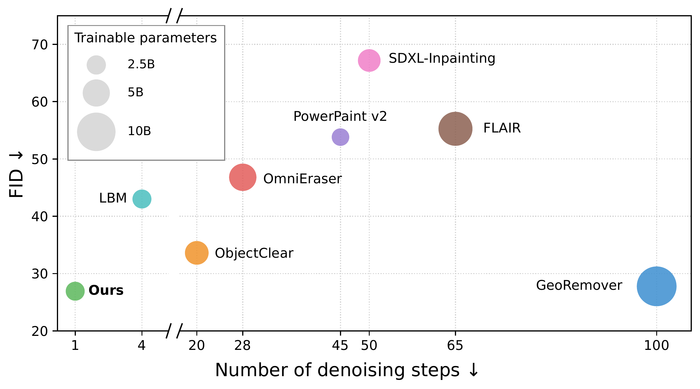

Object removal and semantic inpainting of missing regions remain inherently ill-posed, as multiple plausible completions may exist for a given scene. Recent diffusion-based methods have demonstrated strong potential for high-quality object removal; however, they still face two key limitations. First, although they can synthesize sharp and high-resolution images, they often struggle to complete removed regions in a semantically consistent and contextually meaningful manner, where the generated content should agree with the surrounding scene layout and object relationships rather than merely appear visually realistic. Second, their iterative denoising process makes them computationally expensive, limiting their practicality for downstream applications. We propose SERO, a semantic prediction framework for single-step object removal. Our model predicts a hidden-region semantic prior in embedding space, which guides a latent bridge-matching generator toward plausible scene completion by providing both where to edit and what structure is likely to exist behind the removed object. This enables visually realistic and contextually coherent completions in one forward pass. Experiments on the RORD and OBER datasets show that SERO achieves competitive or state-of-the-art performance while requiring only a single generation step.






@inproceedings{siraj2026sero,
title = {SERO: Semantic Prediction for Single-Step Object Removal},
author = {Siraj, Amreen Hasheem and Javanmardi, Alireza and Jaiswal, Pragati and Stricker, Didier and Pagani, Alain},
booktitle = {The 23rd ACM SIGGRAPH European Conference on Visual Media Production},
year = {2026}
}